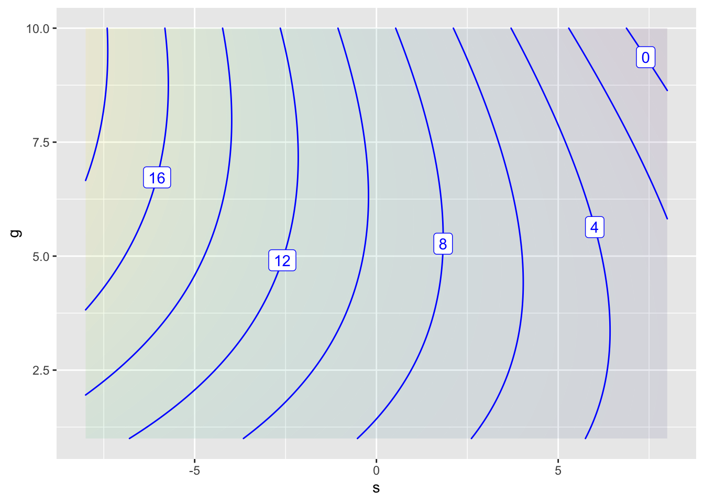
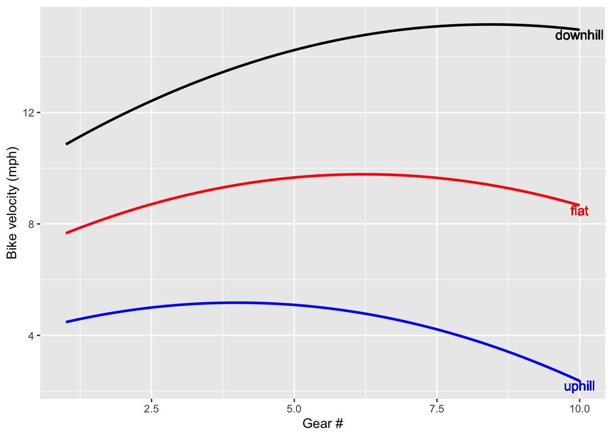

For simplicity, we’ll hold fixed the strength and endurance of the rider, the road surface, curves, traffic, etc.
We’ll focus on two inputs: the steepness of the route and the gear that the bicycle is in.
Steepness \(s\): The grade in percent, from -10 to 10. Positive means uphill, negative means downhill.
Gear \(g\): A number from 0 to 10. Higher numbers correspond to higher speed at a fixed pedaling period. So if we know the gear and the pedaling period, we know exactly the speed of the bike. But, typically bicyclists hold their pedaling period approximately constant, whatever the speed. (This has to do with the efficiency of muscle contraction.)
Our model will be velocity as a function of steepness and gear: \(V(s, g)\). What should it look like?
Questions for thinking about the relationships.
This is a set of starter questions about about how \(V()\) is related to \(s\) and \(g\). They are all asked in terms of partial derivatives.
The first two, “simple or complicated,” are about whether the sign of the partial derivative w.r.t. a variable changes as that variable changes. If so, there is an extremum. We’ll call that “complicated.” If the partial stays the same sign, that’s a “simple” relationship. “Simple” and “complicated” are not technical terms.
Questions in terms of derivatives:
\(\partial_s V(s, g)\).
Simple or complicated?
If simple, positive or negative, large or small (or zero).
negative. We go faster with less steepness.
large. The range of steepness corresponds to a factor of roughly 10 in speed.
\(\partial_g V(s, g)\)
Simple or complicated?
complicated. An increase in gear can either increase or decrease speed. (Too hard a gear kills speed. Too easy a gear thwarts speed. We want a gear that’s just right.)
If simple, positive or negative, large or small (or zero).
\(\partial_{gs} V(s, g)\) and \(\partial_{sg} V(s, g)\). Note: these are equal at all points where the function \(V()\) is smooth.
Does \(\partial_s V(s, g)\) depend on Gear? - yes.
Equivalently, does \(\partial_g V(s, g)\) depend on Steepness. - This one is easier to think about. For negative steepness, optimal gear is higher. For positive steepness, optimal gear is lower.
This table gives some values for the bike’s velocity as a function of hill steepness and gear.
Note that the optimal gear is at the extremes of \(g\) for steep uphill or downhill, and in the middle of \(g\) for biking on the flat.
Note that the speed steadily increases, regardless of \(g\) when the steepness becomes more negative.
Some “data” about \(V(s, g)\)
\(V(s,g)\)
\(g=1\)
\(g=5\)
\(g=10\)
\(s=10\) (uphill)
2
1 mph
0
\(s=0\) (flat)
9
12 mph
6
\(s=-10\) (downhill)
12
16 mph
20
Some “data” about \(\partial_s V(s,g)\): it’s negative, everywhere.
Some “data” about \(\partial_g V(s,g)\): there’s an optimal (maximum speed) gear at each speed. \(\partial_g V(s,g)\) will be zero near the optimum, negative to the right and positive to the left.
Emphasize that these are values for the partial derivative of \(V()\) with respect to \(g\), that is, how the bike speed changes when gear is increased. “Holding everything else constant” means that we can consider the pattern separately for each individual value of \(s\). That is, we only have to consider the horizontal pattern in the table in each row separately. When going steeply uphill (\(s=10\)), the optimal gear is low (\(g=1\)) so increasing the gear will slow the bike. Similarly, when going downhill the optimal gear is hard (\(g=10\)) so increasing \(g\) from a low value will increase the speed of the bike. On a flat road, the optimal gear is near the middle.
\(\partial_g V(s,g)\)
\(g=1\)
\(g=5\)
\(g=10\)
\(s=10\) (uphill)
zero+
neg
vneg
\(s=0\) (flat)
pos
zero
neg
\(s=-10\) (downhill)
vpos
pos
zero-
A polynomial framework
Our general purpose tool for constructing local models of functions of two variables is the polynomial.
We imagine that there is an output that is a function of two inputs: \(f(x,y)\). The polynomial function that we will use will be \[ f(x,y) = a_0 + a_1 x + a_2 y + a_3 x y + a_4 x^2 + a_5 y^2\]
Note that the six parameters have been subscripted with a number. This is just for convenience in referring to them. You can call them a naught'',a one,’’ ``a two’’, and so on. Whatever the names, each of them is just a scalar.
Depending on the values of the parameters \(a_0, a_1, a_2, a_3, a_4, a_5\), this function can take on all sorts of shapes. But, in general, not all of the terms are needed.
\(a_0\): The constant term. This sets a typical value of \(f(x,y)\), but doesn’t depend on either \(x\) or \(y\). It is almost always included by default.
\(a_1 x\) The linear term in \(x\). Produces a simple dependence on the input \(x\); if the input \(x\) changes, then the output \(f(x,y)\) will change.
\(a_2 y\) Likewise, the linear term in \(y\). This produces a simple dependence on the input \(y\).
\(a_4 x^2\) The quadratic term in \(x\) can do two things. It is absolutely needed in the model if there is a maximum or minimum with respect to \(x\). But, even if there is no extremum, if there is an important change in \(\frac{\Delta f}{\Delta x}\) as \(x\) changes, then there should be this quadratic term. Example: economists often speak of diminishing marginal returns — doubling the amount of investment doesn’t lead to a doubling in output per dollar of investment.
\(a_5 y^2\) The quadratic term in \(y\). Like the quadratic term in \(x\), it’s needed for there to be an extremum with respect to \(y\), or a change in \(\frac{\Delta f}{\Delta y}\).
\(a_3 x y\) The interaction term. This term expresses how the inputs \(x\) and \(y\) interact: perhaps interfering with one another or reinforcing one another. Whenever the output will depend on \(x\) differently for different values of \(y\), or vice versa, there should be an interaction term included in the model.
Almost always, we include the constant and linear terms in a model, although we might discover that they are not needed if other terms are added. The question is generally whether to include the quadratic and bilinear terms.
Note that the coefficients are named in accordance with the input variables that follow.
BICYCLE: We’ll write the model as
\[ V(s,g) = a_0 + a_s s + a_g g + a_{sg} s g + a_{ss} s^2 + a_{gg} g^2\]
In order to decide which of these terms to include in the model \(v(s,g)\), it helps to ask the following questions about the two quadratic terms and interaction terms:
Is there an extremum with respect to \(g\)? That is, holding \(s\) fixed, is there a value of \(g\) at which \(f(s,g)\) takes on a maximum or minimum value? If there is, you will want to include the quadratic term in \(g\).
BICYCLE: There is an optimum, a gear where speed is maximal.
If there is an extremum with respect to \(g\), does its position or magnitude depend on the value of \(s\)? If so, include the interaction term.
BICYCLE: The optimal gear varies with steepness
If there isn’t an extremum with respect to \(g\), does the slope with respect to \(g\) depend on \(s\)? If so, include the interaction term even though there isn’t a quadratic term in \(g\).
BICYCLE: Not applicable
The same questions should be asked with respect to \(s\) to decide whether to include the quadratic term in \(s\).
Is there an optimum with respect to \(s\)?
BICYCLE: No.
Does the position of the optimum w.r.t. \(s\) depend on \(g\).
BICYCLE: Not applicable
Does the slope with respect to \(s\) depend on \(g\).
BICYCLE: We don't have a clear opinion of this.
Both \(s\) and \(g\) participate in the interaction term, but sometimes one of the variables gives you a clearer indication that an interaction is important. Include it if warranted for either of the variables \(s\) and \(g\).
BICYCLE: We include interaction term per question (2); we don’t need the answer to 4.iii
Positive or negative?
A good practice when building models is to figure out, based on what we already know, whether the various terms \(s\) and \(g\) terms will appear positively or negatively. (We don’t have to worry about \(a_0\).)
Now that we’ve thrown out the \(a_{ss} s^2\) terms, our model looks like: \[V(s, g) \approx a_0 \pm a_s s \pm a_g g \pm a_{gs} gs \pm a_{gg} g^2\]
We want to assign + or - (or perhaps zero) to each of the four \(\pm\) signs in our model.
\(a_{gg} g^2\) needs to be negative. Reason: There is a maximum with respect to \(g\) and the second derivative is always negative near a maximum.
\[V(s, g) \approx a_0 \pm a_s s \pm a_g g \pm a_{gs} gs - a_{gg} g^2\]
\(a_{s} s\) term needs to be negative. Reason: speed goes down as \(s\) grows from zero, holding gear constant.
\(a_{gs} g\) term needs to be negative. If you are in a high gear (suitable for going downhill), \(V\) will decrease more sharply as \(s\) increases.
Let’s think about \[\partial_g V(s,g) = \pm a_g - a_{gs}s - 2 a_{gg}g.\] (We already know \(a_{gg}g^2\) and \(a_{gs} sg\) terms are negative.)
\(a_g\) term must be positive, since there are some conditions with \(s=0\) (flat) when increasing gear increases speed. (E.g. \(g\) is set inappropriately small, so you would go faster in a higher gear. )
Putting this together, we expect that our model will look like:
\[V(s, g) \approx a_0 - a_s s + a_g g - a_{gs} gs - a_{gg} g^2\]
We might use this result if we had to assign values to the coefficients without any other info.
Or, since we have data to fit the model to, we can use our sign expectation to check whether the model (or our reasoning) is making sense.
Fitting the model to data
Our data …
\(V(s,g)\)
\(g=0\)
\(g=5\)
\(g=10\)
high s (uphill)
2
1 mph
0
zero s (flat)
9
12 mph
6
low s (downhill)
12
16 mph
20
The proper form of a data table has one column for each variable. The printed table above is a form of graphic, much like a surface plot.
In the lm() formula, arithmetic operations are enclosed in I() to override the default interpretation where, say, s*g would expand to s + g + s:g. Don’t use the poly() function to create the 2nd-order terms. The model values will be fine but the coefficients will be difficult to interpret since lm() will use orthogonal polynomials.
This might be good for some purposes, e.g. predicting how long it will take to bike a route.
I propose that the “application” for Block 3 be using this model to calculate how much better a 15-speed bike would be than a 1-speed or 3-speed bike over a given terrain (specified as a series of piecewise linear segments). The figure of merit would be how long it takes to complete the route. For each segment, compute from the steepness the optimal gear then round that off to the nearest gear number. This gives a velocity for that segment, which can then be turned into time by dividing the length of the segment by the velocity. Sum up the times over all segments.
But for other purposes, e.g. figuring out what happens if you have only one gear, we need a model that includes \(g\).
Partial derivatives algebraically
The model we developed for the speed of a bicycle \(V\) as a function of steepness \(s\) of the road and bike gear \(g\) is a second-order polynomial in \(s\) and \(g\) with five terms:
\[V(s, g) = a_0 + a_s s + a_g g + a_{sg} s g + a_{gg}g^2\]
The complete second-order polynomial in two variables has six terms. Which one is missing in \(V(s, g)\)
\(a_{ss} s^2\)
\(a_{gg} g^3\)
\(a_{gg} g^{-2}\)
\(a_{g} g\)
\(a_{sg} g/s\)
question id: biking-speed-1
Which of these is \(\partial_g V(s, g)\)?
\(a_{g} + a_{sg} s + 2 a_{gg} g\)
\(a_0 + a_{g} + a_{sg} s + 2 a_{gg} g\)
\(a_{g} g + a_{sg} g + 2 a_{gg} g\)
\(a_{s} s + a_{sg} gs + a_{gg} g^2\)
\(a_{g} + a_{sg} s + 2 a_{gg}\)
question id: biking-speed-2
Which of these is \(\partial_s V(s, g)\)?
\(a_{s} + a_{sg} g\)
\(a_{g} g + a_{sg} s + 2 a_{ss} s\)
\(a_{g} g + a_{sg} s + 2 a_{gg} g\)
\(a_s s + a_{sg} sg\)
question id: biking-speed-3
Which of these is \(\partial_{sg} V(s, g)\)?
\(a_{sg}\)
\(a_{sg} s\)
\(a_{sg} g\)
\(a_{sg} sg\)
question id: biking-speed-4
Which of these is \(\partial_{ss} V(s, g)\)?
\(0\)
\(2a_{ss} s\)
\(a_{ss} s\)
\(2 a_{ss} g\)
\(a_{sg}\)
question id: biking-speed-5
Bicycling with missing terms
The following code chunk will fit the low-order polynomial model of the bicycle to the data used in class. The results are shown in 4 different ways:
The coefficients on the model
A contour plot of the model
A surface plot of the model
A slice plot showing speed as a function of gear for three different slopes of road.
You might find some of these displays more useful than others. Feel free to comment out (with a #) the ones that you don’t find useful.
Notice that the “model formula” in the lm() function is
V ~ s + g + I(s*g) + I(g^2)
This expression contains just the variables in the model. The lm() function does the work of finding the best coefficients for a linear combination of those terms. In the following questions, you’re going to remove terms (such as + I(s*g) from the model formula) to see what happens to the model. In one of the questions, you’ll extend the formula with a - 1 (which suppresses the intercept term that is ordinarily included in models).
Bicycle_speed <- tibble::tribble(~ s, ~ g, ~ V,8, 1, 2,8, 5, 1,8, 10,0,0, 1, 9,0, 5, 12,0, 10, 6,-8, 1, 12,-8, 5, 16,-8, 10, 20)# fit the model to the datamod <-lm(V ~ s + g +I(s*g) +I(g^2) , data = Bicycle_speed)knitr::kable(coef(mod))mod_fun <-makeFun(mod) # turn the statistical model into a functiondom <-domain(s =c(-8, 8), g =c(1, 10))contour_plot(mod_fun(s, g) ~ s + g, dom)

interactive_plot(mod_fun(s, g) ~ s + g, dom)
Loading required namespace: plotly
slice_plot(mod_fun(s=0, g) ~ g, domain(g=c(1,10)),color ="red", label_text ="flat") |>slice_plot(mod_fun(s =-5, g) ~ g, color ="black",label_text ="downhill") |>slice_plot(mod_fun(s =5, g) ~ g, color ="blue",label_text ="uphill")|>gf_labs(y ="Bike velocity (mph)", x ="Gear #")

Essay 1: The lm() function automatically adds an "intercept" term to the model. You can suppress this by ending the model formula with -1. Explain briefly what happens when you suppress the intercept and to what extent that model makes sense for the bicycle situation.
Restore the R statements to their original form before you answer this question.
Essay 2: The interaction term in the model is included by the + I(s*g) component of the model formula. (Don’t get confused: "Interaction" and "intercept" are completely different things.) Take out the interaction term, refit and re-display the model. Explain briefly what happens when you suppress the interaction term and to what extent that model makes sense for the bicycle situation.
Restore the R commands to their original form before you answer this question.
Essay 3: Suppose you add in a quadratic term in s to the model. Explain briefly whether this changes the model a lot or not. Also, look at the coefficients found by lm() for this extended model. What about those coefficients accounts for whether the model changed by a little or a lot.
Restore the R commands to their original form before you answer this question.
Essay 4: Add a new plot to the code box. It should be just like the slice-plot that was originally there, but instead of each slice holding road slope constant and showing velocity as a function of gear, change things so that gear is held constant and the plot shows velocity as a function of road slope. Explain in everyday terms what this new plot displays about the model and say whether you think it makes sense.
Labor vs capital
The Cobb-Douglas production function is a simple mathematical model of how labor \(L\) and capital \(K\) combine to produce a factory’s output \(P\). It is \[P(L, K) \equiv A K^\alpha L^{1-\alpha}\ .\] For simplicity, imagine that capital and labor are both measured in dollars per year—the amount that the labor force is paid in a year and the amount that one could rent a factory for a year.
If production \(P(L, K)\) is also measured in dollars per year (say, the value of the factory output each year), what is the dimension of the constant \(A\)?
According to the model, what happens to production if both \(K\) and \(L\) are increased by a factor constant factor \(\beta\)? (Hint: Substitute in \(K \rightarrow \beta K\) and \(L \rightarrow \beta L\) and simplify.)
Consider a particular factory with \(A = 2.5\) and exponent \(\alpha = 0.33\). In a sandbox, implement the function \(P (K, L)\). Use your function to compute the production of the factory for \(K = 10\) and \(L=20\). Confirm that you get \(P(K=10,L=20)= 39.78\)
A factory that rents for $10/yr and where the labor costs $20/yr is silly. Calculate the value \(P (K, L)\) when \(K\) is $10 million/yr and \(L\) is $20 million/yr.
We’ll stick with numbers like \(K = 10\) and \(L = 20\) to keep things easy to read, but feel free to interpret them as “millions of dollars.”
Congratuations! Based on your ability to use the Cobb-Douglas model, you’ve been promoted to manager of the factory. One of your jobs is to decide how to balance expenditures on capital and labor to raise productivity.
One basic question is what happens when you raise either capital or labor, holding the other one constant. Using ap- propriate partial derivatives evaluated at \(K = 10\), \(L = 20\), calculate:
The rate at which an increase in spending on labor will increase productivity.
The rate at which an increase in spending on capital will increase productivity.
Based on the above, if you had to choose between spending on capital or labor, and your goal is to increase productivity as much as possible, which would you spend on, capital or labor?
Your economist friend tells you to watch out for “diminishing marginal returns.” This means that, as you increase spending on either labor or capital, the rate of increase in production tends to diminish. You’ll still get increased production as you increase spending, but it won’t increase as fast at high levels of expense as at low levels.
Compute the partial derivative of production with respect to labor at a higher level of labor, say \(L = 21\), but holding \(K = 10\). How does the value of the derivative at \(L = 21\) compare to that at \(L = 20\)? Is this consistent with the idea of “diminishing marginal returns” for labor?
Do the same for the partial derivative of production with respect to capital, evaluated at \(L = 20\) and \(K = 11\). How does the value of the derivative at \(K = 11\) compare to that at \(K = 10\). Is this consistent with the idea of “diminishing marginal returns” for capital?
Use an appropriate partial second derivative to find the rate of diminishing partial returns for labor at \(L = 20\) and \(K = 10\). Show that it is consistent with the difference you got in Part (d).
Use an appropriate partial second derivative to find the rate of diminishing partial returns for capital at \(L = 20\) and \(K = 10\). Show that it is consistent with the difference you got in Part (3).
You might think of the rate of increase in production with respect to labor as the “value rate” of labor. Similarly, the rate of increase in production with respect to capital is the value rate of capital. Due to diminishing marginal returns, an increase in labor spending, holding capital constant, decreases the value rate of labor. Similarly, an increase in capital spending holding labor spending constant decreases the value rate of capital.
But what happens to the value rate of labor when capital spending is increased? You can answer this by comparing the value rate of labor, \(\partial_L P\) , at two different capital spending levels, say \((K = 10,L = 20)\) and \((K = 11,L = 20)\). Notice that even though you’re looking at the rate with respect to labor, you’re changing the expenditure on capital.
Compare \(\partial_L P\) at slightly different values of \(K\) , holding \(L\) constant at 20. Does the value rate of labor increase or decrease with spending on capital?
Similarly, compare \(\partial_K P\) at slightly different values of \(L\), holding \(K\) constant at 20. Does the value rate of labor increase or decrease with spending on capital?
Finally, construct and evaluate the mixed partial derivative, $_L _K P at \(K = 10\), \(L = 20\). Compare this to the results you got for the way \(\partial_K P\) changes with increasing \(L\) and the way \(\partial_L P\) changes with increasing \(K\).